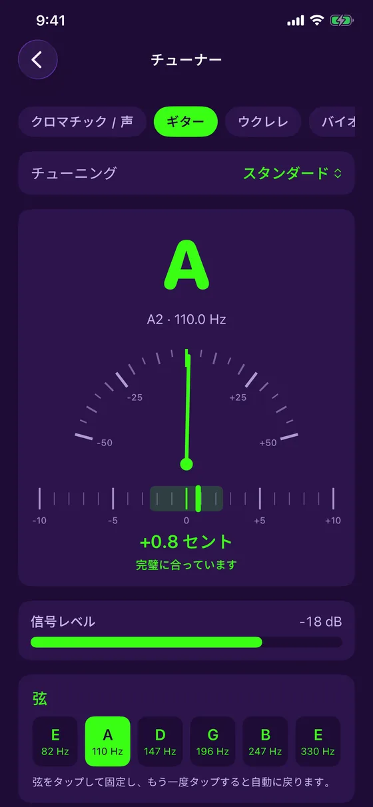
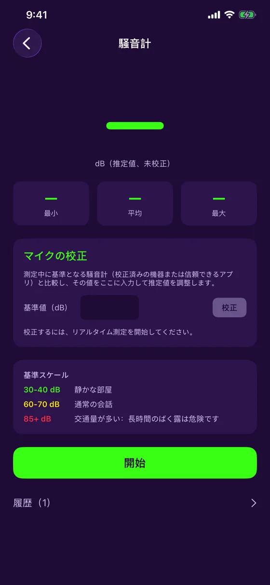
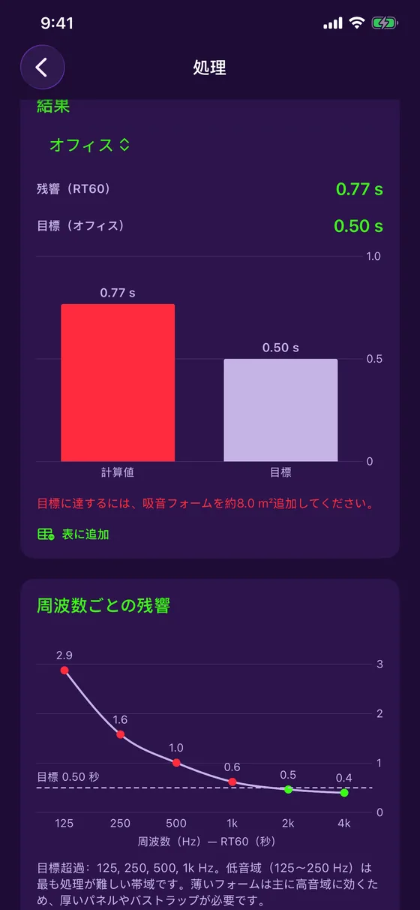
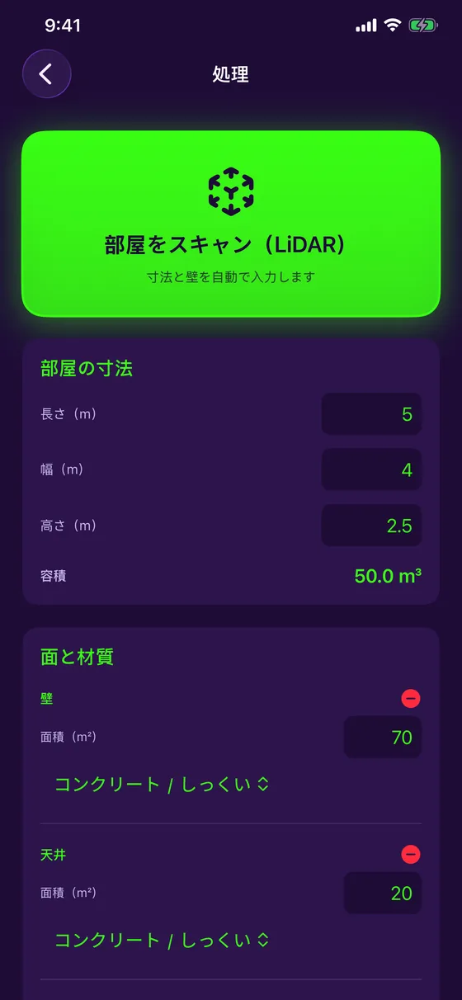
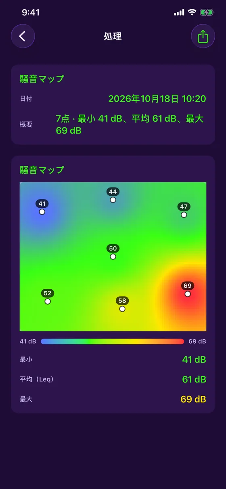
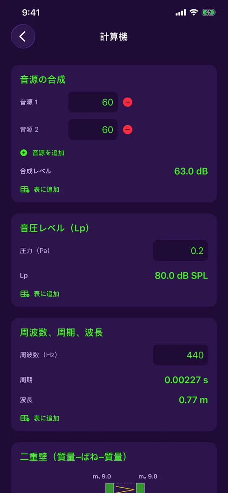
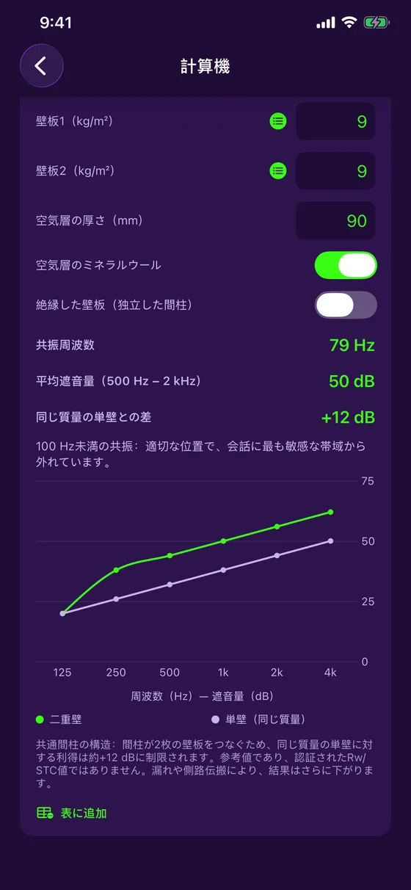
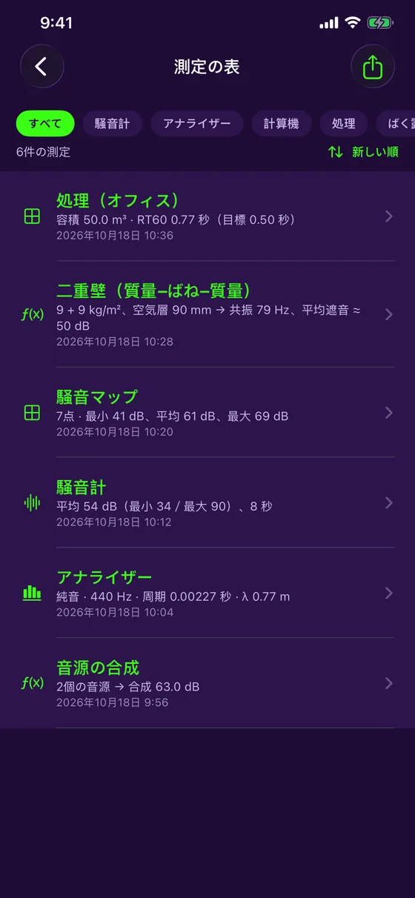

機能
部屋を測って改善するために必要なものすべて
iPhoneのマイクとカメラで、場所の音響を測定・計算・記録。アプリを離れず、接続も不要です。
測定
無料：毎日の測定に必要なもの
リアルタイム騒音計
dB値をリアルタイムで表示。最小・平均・最大と、2種類のグラフスタイル（フェスティバル、スタジオ）。
マイクのキャリブレーション
基準となる騒音計と比較して調整。各測定にキャリブレーション済みか推定値かが表示されます。
スペクトラム分析
リアルタイムの周波数分析（FFT）と、音の分類：純音、複合音、ノイズ。
純音
純音の場合は、周波数・周期・波長を自動で計算します。
色分けされた履歴
各セッションは曲線とともに保存。レベルに応じて緑・黄・赤で表示されます。
測定一覧
すべての測定の記録。フィルタ、並べ替え、グラフ付きPDFレポートへの書き出しに対応。
詳しく見る
それぞれのツールを近くで
チューナー
耳でも合わせられる。針に任せてもいい。
- ギター（5種類のチューニング）、ウクレレ（ローGとバリトンを含む）、バイオリン、ビオラ、チェロ、マンドリン、バンジョー
- 声や任意の音のためのクロマチックモード
- セントをリアルタイム表示する針と、±10セントの微調整バー。合うと振動でお知らせ
- 異常な測定値を無視する安定した表示と、信号レベルのメーター
- 基準周波数は430〜450 Hzで調整可能。しかも無料

騒音計、キャリブレーション、履歴
現場でいちばん手軽に開ける騒音計。
- リアルタイムのレベル、最小・平均・最大
- 基準となる測定器でマイクをキャリブレーション。キャリブレーションの状態は各測定に記録
- 色分けされた曲線付きのセッション履歴
- 画像の共有や、測定一覧への追加

周波数ごとの残響
問題があるかどうかだけでなく、どこに問題があるかを知る。
- 125 Hzから4 kHzまでのオクターブバンド別RT60を、用途ごとの目標値（オフィス、スタジオ、会議室、ホームシアター）と比較
- 目標を超えるバンドを表示し、低音へのアドバイスも
- 部屋の各材料の吸音曲線。10種類の材料から選択
- セイビンの式と一般的な係数による、目安の推定値

スキャンから必要な吸音材まで
部屋をスキャンすれば、計算はアプリにおまかせ。
- iPhone Pro（LiDAR）なら、ひと通り見渡すだけで寸法と各壁の面積を自動入力
- LiDARがなくても、寸法を手入力すれば他のすべてが使えます
- 部屋のアイソメトリック3D図を、一覧とPDFレポートに反映
- 目標に届くために追加する吸音材の量
- 短いノイズバーストによるRT60のリアルタイム測定

ノイズマップ
部屋のどこがうるさいか、ひと目でわかる。
- 部屋の平面図をタップして、各地点で5秒間測定
- 静かな場所とうるさい場所のヒートマップ
- 最も静かなレベル、平均（Leq）、最もうるさいレベル
- 測定一覧とPDFレポートに保存

音響の計算ツール
現場の公式を、紙も電卓もなしで。
- 音源の合成：合わせて何dBになるか
- パスカル単位の圧力から音圧レベルを算出
- 周波数、周期、波長
- 結果はワンタップで一覧に追加

二重壁
壁をつくる前に、遮音性能を見積もる。
- 各パネルの質量と空気層の厚さから、質量‐ばね‐質量で計算
- 共振周波数と、オクターブバンドごとの遮音性能
- ミネラルウールの有無、パネルの絶縁（任意）にも対応
- 目安の推定値であり、認証されたRw/STC値ではありません

測定一覧とPDFレポート
測ったものはすべて整理され、共有できる。
- 各測定は中央の一覧に追加され、種類で絞り込み可能
- グラフと部屋の3D図が入ったPDFレポート
- グラフを写真に保存、またはiOSの共有機能で共有
- すべてお使いの端末内に保存。アカウントもサーバーも不要

無料版と Acoustic Detector コンプリート
| 無料 | コンプリート | |
|---|---|---|
| リアルタイム騒音計とキャリブレーション | ✓ | ✓ |
| スペクトラム分析 | ✓ | ✓ |
| チューナー | ✓ | ✓ |
| 測定一覧とPDF書き出し | ✓ | ✓ |
| 部屋のRT60と必要な吸音材 | — | ✓ |
| オクターブバンド別RT60と吸音 | — | ✓ |
| LiDARによる部屋のスキャン | — | ✓ |
| ノイズマップ | — | ✓ |
| 計算ツールと二重壁 | — | ✓ |
「Acoustic Detector コンプリート」は CA$4.99 の買い切りで、サブスクリプションはありません。